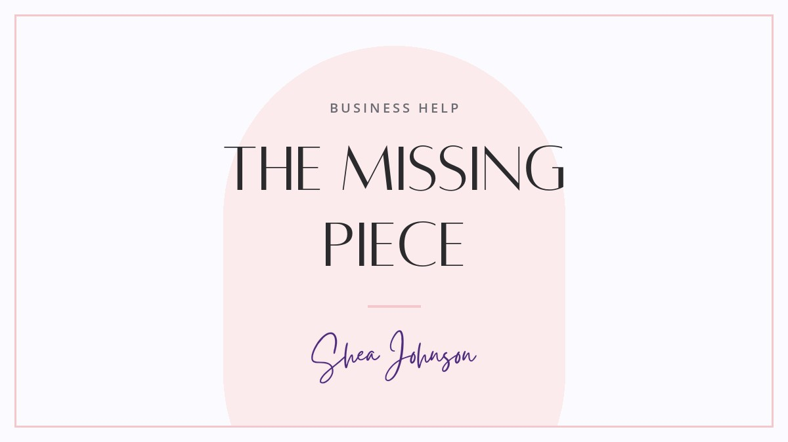

Sometimes it feels like…
I’ve been trying to get a business off the ground since 2017.
It’s so funny — whenever I’m faced with the question, “When did I start my business?”
I never know what to say.
Because I filed a business with the secretary’s office years ago.
But I have changed many times what I wanted to do in that business.
Here’s what I recently learned…
Over the years, I discovered all the reasons why things might not have taken off in the beginning.
And some of the internal work I needed to do in order to be successful.
I’ve had plenty of those “if I knew back then what I know now” moments about business.
Which is why this personal development workbook was one of the first digital products I created.
Even though my best offer right now is teaching business owners how to use AI, I have a coaching style and approach that is holistic.
So a lot of that includes personal development for you all too.
Hence, the content of this workbook.
Disclosure: For links you click on and make a purchase, I may earn a commission at no extra cost to you. Thank you for supporting my content!
In this workbook…
You will learn about five areas I felt were very important to tackle and take a closer look at when starting and growing your business.
These were the areas that, once I worked on them and mastered success within them, I started to see the changes in my business progress and growth that I wanted to see.
This workbook is an assessment you will do on yourself.
Please read every section within it in order to get the full experience it’s meant to provide.
You will answer questions.
Tally up your score at the end.
And learn where you stand within each area.
The Five Areas This Workbook Covers:
(These are the internal shifts that changed everything for me)
- Time Management — Because you can’t grow what you can’t organize
- Goal Setting & Habit Tracking — The difference between dreaming and doing
- Business Strategy — Clarity turns into action
- Leadership & Team Management — Even if your “team” is just you right now
- Work-Life Balance — Because burnout kills businesses
Here’s what I want you to know…
I spent years spinning my wheels.
Starting.
Stopping.
Changing direction.
Wondering why nothing was sticking.
And then I realized:
The problem wasn’t my business idea.
The problem was me.
Not in a bad way.
In a “I need to work on myself first” way.
Once I did that internal work?
Everything changed.
My business finally started moving.
I stopped sabotaging myself.
I built momentum.
And I actually started seeing progress.
That’s why I created this workbook.
Because I know there are entrepreneurs out there right now who are exactly where I was.
Working hard.
But not seeing results.
And wondering what they’re doing wrong.
Sometimes the missing piece isn’t another strategy.
It’s the internal work.
I hope you have fun completing this workbook — just as much fun as I had creating it with you all in mind.
(HINT: Download the PDF in order to complete the workbook fields in a PDF filler.)
Disclosure: For links you click on and make a purchase, I may earn a commission at no extra cost to you. Thank you for supporting my content!
If you’re ready to do the internal work:
👉 Get “The Entrepreneur’s Mirror” workbook on Etsy — Assess yourself across the 5 areas that changed my business
If you want to learn AI tools for your business:
If you need FREE business mentorship:
👉 Visit BBMentors.org — Connect with experienced mentors who care about your success
The missing piece might not be what you think.
Start with the internal work.
You’ve got this.